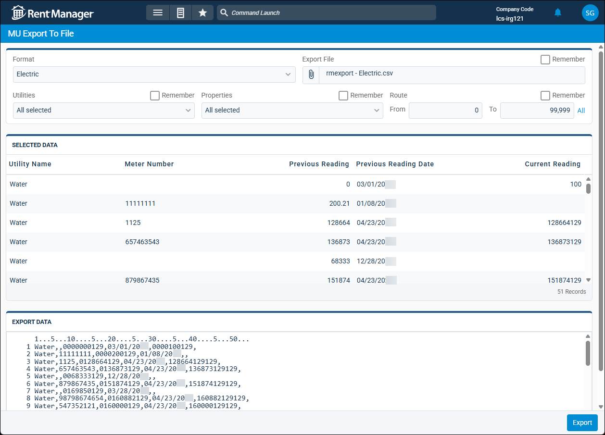
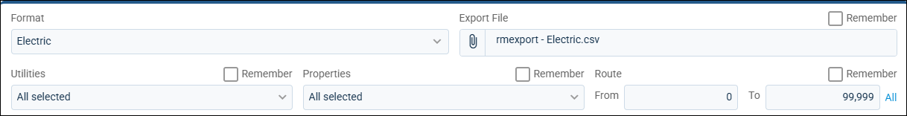

Source: https://rmxhelp.rentmanager.com/Topics/Express/Other/MU-Export-to-File.htm
Export to File (Metered Utilities)
The MU Export To File page gives you the ability to export meter reading data from Rent Manager and download it as a text (TXT) or comma-separated value (CSV) file to your network or computer. This tool is useful for viewing meter reading information outside of Rent Manager in a spreadsheet, keeping a backup of this data stored locally, or sharing this data with a coworker or utility company.
Related Privileges
| Group | Privilege | Column |
|---|---|---|
| Utilities | Metered utilities | Enabled |
For more information, refer to Control User Access.

Warning
In order to export meter readings from this page, you must have a file format set up that Rent Manager uses to format the data in the file. The file format determines if the file is exported as a TXT or CSV. For more information, refer to Add a File Format (Metered Utilities).
To export a file of meter readings, do the following:
-
Go to
 arrow_forward Services arrow_forward Metered Utilities arrow_forward Export To File.
arrow_forward Services arrow_forward Metered Utilities arrow_forward Export To File.
The MU Export To File page displays. -
In the first tile, enter information in the available fields below. On any applicable fields, to have Rent Manager automatically populate your selected data in that field the next time you open the MU Export To File page, check Remember.

Field Description Export File
To determine the file name and the location on your network or computer where you wish to save the export file, click
 .
.Format
The file format to use that tells Rent Manager how to configure the export file. For more information, refer to MU File Formats (Page).
Properties
The properties whose meter readings you are exporting.
Route
If you only wish to export data for a specific range of meters by route number, enter the route number range in the From and To fields. Otherwise, to export data for all route numbers, leave this field as its default of 0 to 99,999, or click All.
Utilities
The utilities that you are exporting meter readings for.
The Selected Data tile populates with the utility meter reading information for the selected properties and utilities.
-
In the Export Data tile, review the preview of the output data as plain text and ensure it includes all the records you need.
More Information
The format of the information in this tile is dependent on whether you selected the Delimited or Fixed Length option in the selected file format. For more information, refer to MU File Formats (Page).
-
Click Export.
The meter reading data is exported as a CSV or TXT file in the designated location.